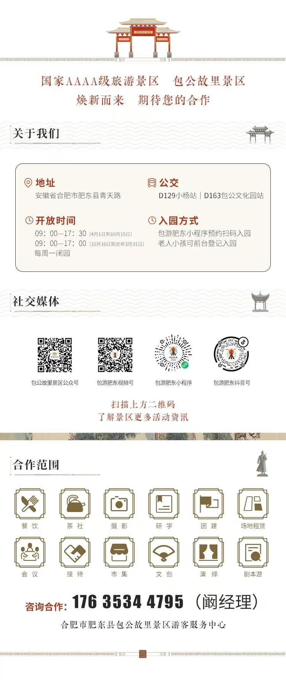
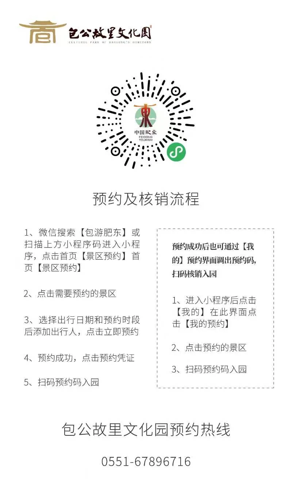
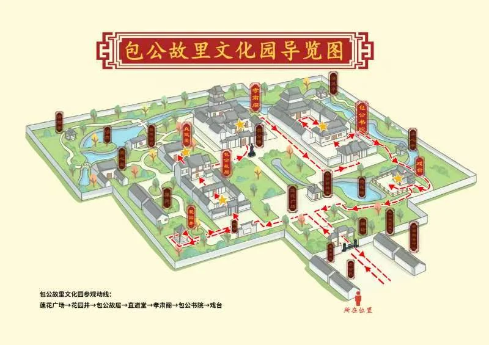

景区地址
安徽省合肥市肥东县青天路
地址、开放时间、交通、预约流程、咨询电话和官方宣传渠道集中查看。
以下信息依据景区发布的景区宣传页整理。出行前仍建议通过“包游肥东”小程序或景区电话确认最新安排。
安徽省合肥市肥东县青天路
4月1日至10月15日：09:00—17:30
10月16日至次年3月31日：09:00—17:00
每周一闭园
通过“包游肥东”小程序预约，预约成功后扫码核销入园；老人、儿童可在前台登记入园。
D129路“小杨站”
D163路“包公文化园站”
图片内包含公众号、视频号、小程序、抖音号二维码及完整预约说明。点击图片可放大阅读。


